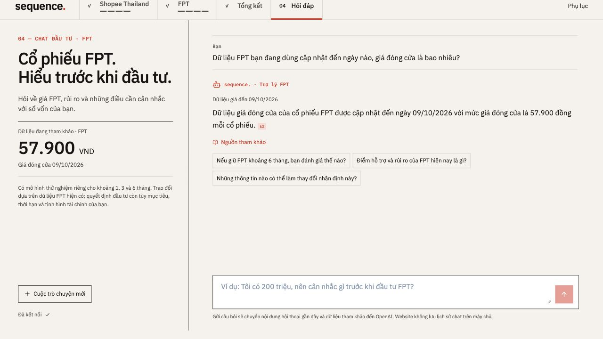

04 / FPT QUESTIONS
Plain-language answers draw on dated prices, model outputs and evidence.
Neo4j retrieval + language model

Closing-price updates use existing models. The answer shows its data date and sources.